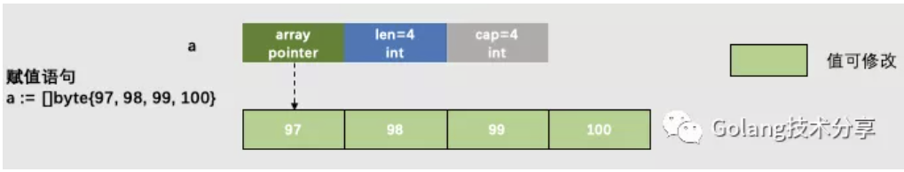
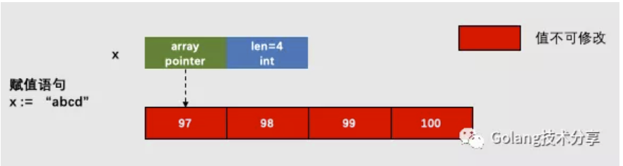
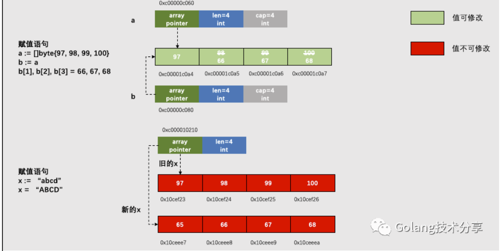
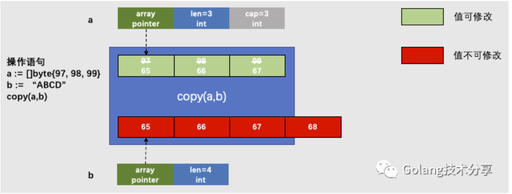
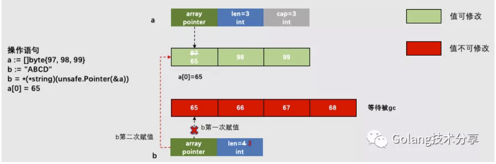
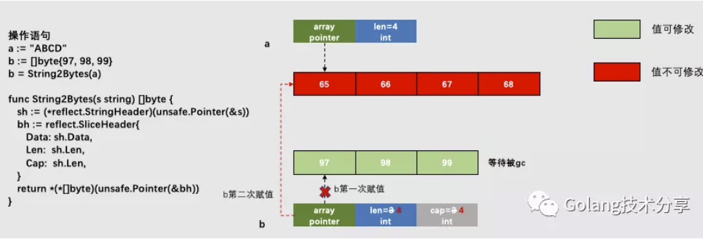

string类型和[]byte类型是我们编程时最常使用到的数据结构。本文将探讨两者之间的转换方式，通过分析它们之间的内在联系来拨开迷雾。
两种转换方式
- 标准转换
go中string与[]byte的互换，相信每一位gopher都能立刻想到以下的转换方式，我们将之称为标准转换。
1 | // string to []byte |
- 强转换
通过unsafe和reflect包，可以实现另外一种转换方式，我们将之称为强转换（也常常被人称作黑魔法）。
1 | func String2Bytes(s string) []byte { |
既然有两种转换方式，那么我们有必要对它们做性能对比。
1 | 1// 测试强转换功能 |
测试结果如下
1 | 1$ go test -bench="." -benchmem |
注意，-benchmem可以提供每次操作分配内存的次数，以及每次操作分配的字节数。
当x的数据均为”Hello Gopher!”时，测试结果如下
1 | 1$ go test -bench="." -benchmem |
强转换方式的性能会明显优于标准转换。
读者可以思考以下问题
1.为什么强转换性能会比标准转换好？
2.为什么在上述测试中，当x的数据较大时，标准转换方式会有一次分配内存的操作，从而导致其性能更差，而强转换方式却不受影响？
3.既然强转换方式性能这么好，为什么go语言提供给我们使用的是标准转换方式？
原理分析
要回答以上三个问题，首先要明白是string和[]byte在go中到底是什么。
在go中，byte是uint8的别名，在go标准库builtin中有如下说明：
1 | 1// byte is an alias for uint8 and is equivalent to uint8 in all ways. It is |
在go的源码中src/runtime/slice.go，slice的定义如下：
1 | 1type slice struct { |
array是底层数组的指针，len表示长度，cap表示容量。对于[]byte来说，array指向的就是byte数组。

关于string类型，在go标准库builtin中有如下说明：
1 | // string is the set of all strings of 8-bit bytes, conventionally but not |
翻译过来就是：string是8位字节的集合，通常但不一定代表UTF-8编码的文本。string可以为空，但是不能为nil。string的值是不能改变的。
在go的源码中src/runtime/string.go，string的定义如下：
1 | 1type stringStruct struct { |
stringStruct代表的就是一个string对象，str指针指向的是某个数组的首地址，len代表的数组长度。那么这个数组是什么呢？我们可以在实例化stringStruct对象时找到答案。
1 | 1//go:nosplit |
可以看到，入参str指针就是指向byte的指针，那么我们可以确定string的底层数据结构就是byte数组。

综上，string与[]byte在底层结构上是非常的相近（后者的底层表达仅多了一个cap属性，因此它们在内存布局上是可对齐的），这也就是为何builtin中内置函数copy会有一种特殊情况copy(dst []byte, src string) int的原因了。
1 | 1// The copy built-in function copies elements from a source slice into a |
对于[]byte与string而言，两者之间最大的区别就是string的值不能改变。这该如何理解呢？下面通过两个例子来说明。
对于[]byte来说，以下操作是可行的：
1 | 1b := []byte("Hello Gopher!") |
string，修改操作是被禁止的：
1 | 1s := "Hello Gopher!" |
而string能支持这样的操作：
1 | 1s := "Hello Gopher!" |
字符串的值不能被更改，但可以被替换。string在底层都是结构体stringStruct{str: str_point, len: str_len}，string结构体的str指针指向的是一个字符常量的地址， 这个地址里面的内容是不可以被改变的，因为它是只读的，但是这个指针可以指向不同的地址。
那么，以下操作的含义是不同的：
1 | 1s := "S1" // 分配存储"S1"的内存空间，s结构体里的str指针指向这块内存 |
图解如下

因为string的指针指向的内容是不可以更改的，所以每更改一次字符串，就得重新分配一次内存，之前分配的空间还需要gc回收，这是导致string相较于[]byte操作低效的根本原因。
[]byte(string)的实现（源码在src/runtime/string.go中）
1 | 1// The constant is known to the compiler. |
这里有两种情况：s的长度是否大于32。当大于32时，go需要调用mallocgc分配一块新的内存（大小由s决定），这也就回答了上文中的问题2：当x的数据较大时，标准转换方式会有一次分配内存的操作。
最后通过copy函数实现string到[]byte的拷贝，具体实现在src/runtime/slice.go中的slicestringcopy方法。
1 | 1func slicestringcopy(to []byte, fm string) int { |
copy实现过程图解如下

string([]byte)的实现（源码也在src/runtime/string.go中）
1 | 1// Buf is a fixed-size buffer for the result, |
可见，当数组长度超过32时，同样需要调用mallocgc分配一块新内存。最后通过memmove完成拷贝。
\1. 万能的unsafe.Pointer指针
在go中，任何类型的指针T都可以转换为unsafe.Pointer类型的指针，它可以存储任何变量的地址。同时，unsafe.Pointer类型的指针也可以转换回普通指针，而且可以不必和之前的类型T相同。另外，unsafe.Pointer类型还可以转换为uintptr类型，该类型保存了指针所指向地址的数值，从而可以使我们对地址进行数值计算。以上就是强转换方式的实现依据。
而string和slice在reflect包中，对应的结构体是reflect.StringHeader和reflect.SliceHeader，它们是string和slice的运行时表达。
1 | 1type StringHeader struct { |
\2. 内存布局
从string和slice的运行时表达可以看出，除了SilceHeader多了一个int类型的Cap字段，Date和Len字段是一致的。所以，它们的内存布局是可对齐的，这说明我们就可以直接通过unsafe.Pointer进行转换。
[]byte转string图解

string转[]byte图解

Q1.为什么强转换性能会比标准转换好？
对于标准转换，无论是从[]byte转string还是string转[]byte都会涉及底层数组的拷贝。而强转换是直接替换指针的指向，从而使得string和[]byte指向同一个底层数组。这样，当然后者的性能会更好。
Q2.为什么在上述测试中，当x的数据较大时，标准转换方式会有一次分配内存的操作，从而导致其性能更差，而强转换方式却不受影响？
标准转换时，当数据长度大于32个字节时，需要通过mallocgc申请新的内存，之后再进行数据拷贝工作。而强转换只是更改指针指向。所以，当转换数据较大时，两者性能差距会愈加明显。
Q3.既然强转换方式性能这么好，为什么go语言提供给我们使用的是标准转换方式？
首先，我们需要知道Go是一门类型安全的语言，而安全的代价就是性能的妥协。但是，性能的对比是相对的，这点性能的妥协对于现在的机器而言微乎其微。另外强转换的方式，会给我们的程序带来极大的安全隐患。
如下示例
1 | 1a := "hello" |
a是string类型，前面我们讲到它的值是不可修改的。通过强转换将a的底层数组赋给b，而b是一个[]byte类型，它的值是可以修改的，所以这时对底层数组的值进行修改，将会造成严重的错误（通过defer+recover也不能捕获）。
1 | 1unexpected fault address 0x10b6139 |
Q4. 为什么string要设计为不可修改？
我认为有必要思考一下该问题。string不可修改，意味它是只读属性，这样的好处就是：在并发场景下，我们可以在不加锁的控制下，多次使用同一字符串，在保证高效共享的情况下而不用担心安全问题。
- 在你不确定安全隐患的条件下，尽量采用标准方式进行数据转换。
- 当程序对运行性能有高要求，同时满足对数据仅仅只有读操作的条件，且存在频繁转换（例如消息转发场景），可以使用强转换。